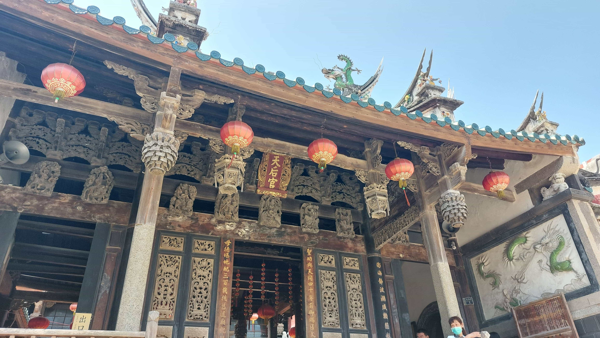
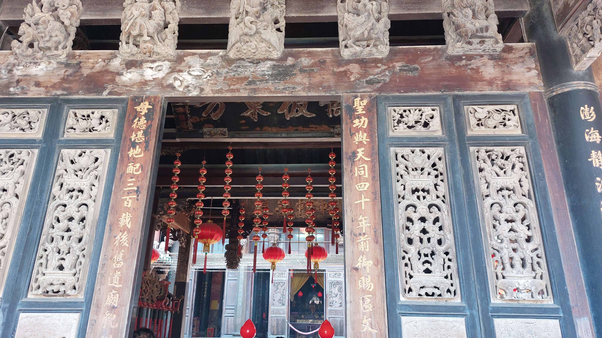

開臺天后宮媽祖介紹與重光媽祖銅像介紹
花火節
文化特色
無人機秀
觀賞地點
澎湖美食
早午餐
下午茶
晚餐
澎湖土產
澎湖土產
黑糖糕
花生酥
干貝醬
古蹟文化
西嶼西臺
西嶼東臺
順承門
澎湖媽祖
活動介紹
來歷介紹
馬祖銅像
首頁


因澎湖四面淮海，島嶼羅列，為了守護捕魚船隻，而討海人都最信仰、崇拜海上守護人-媽祖
媽祖神像都是金面媽祖，頭戴后冠，雙手持笏與胸前，慈眉善目。
正月十五日
上午接神、元宵節慶慶祝活動。
二月二日
福德正神聖誕。
二月三日
文昌帝君聖誕。
三月二十日
註生娘娘聖誕。
三月二十二日
聖母聖誕暖壽(夜間)。
四月十五日
伽藍尊者聖誕。
四月十六日
祭祀積慶公、積慶夫人。
五月二十三日
中壇元帥聖誕。
七月十一日
中元普渡。
八月二十五日
中元普渡。
九月九日
聖母成道紀念日。
十二月十五日
送神。
十二月十六日
福德正神聖誕。
十二月二十九日至三十日
辭年。
均為陰曆日期，神聖誕辰祝壽時間為上午八時。
天后宮整體
天后宮正門
資料來源：
天后宮介紹書